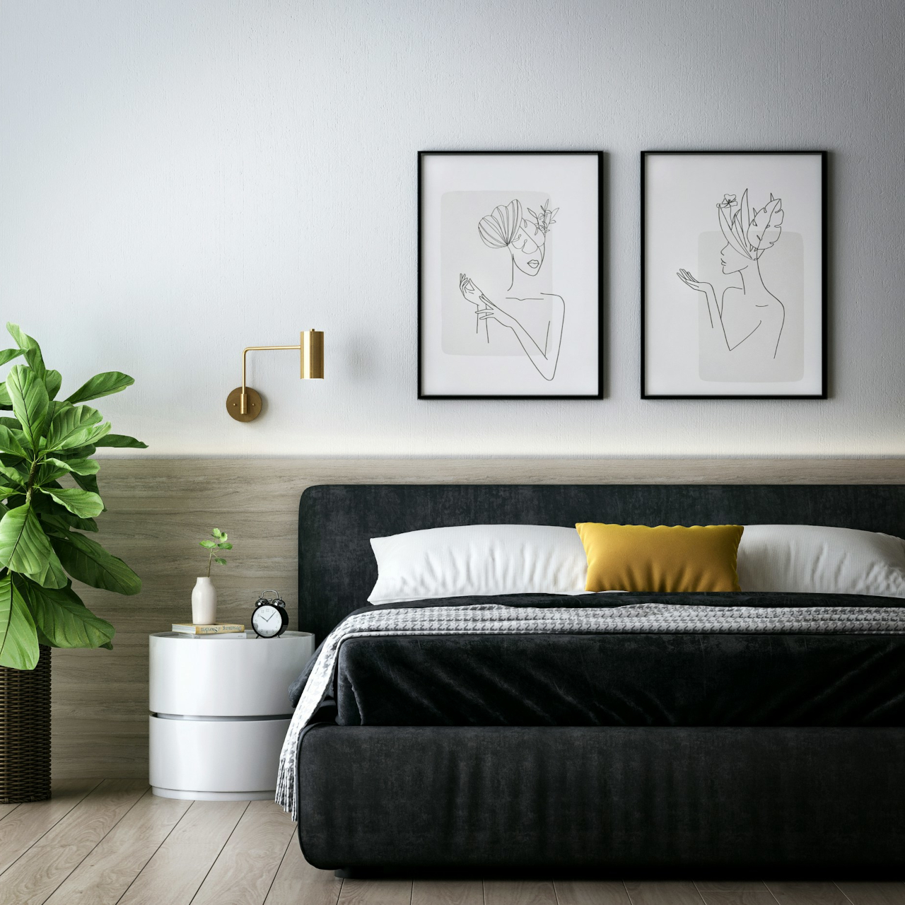
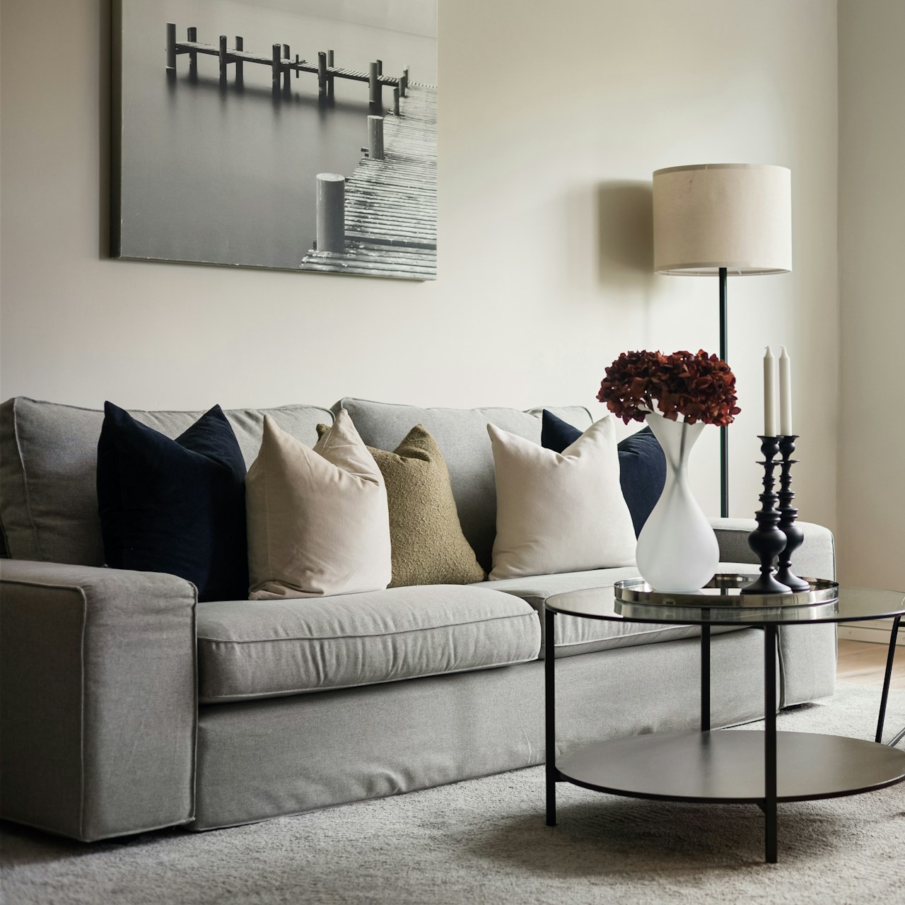
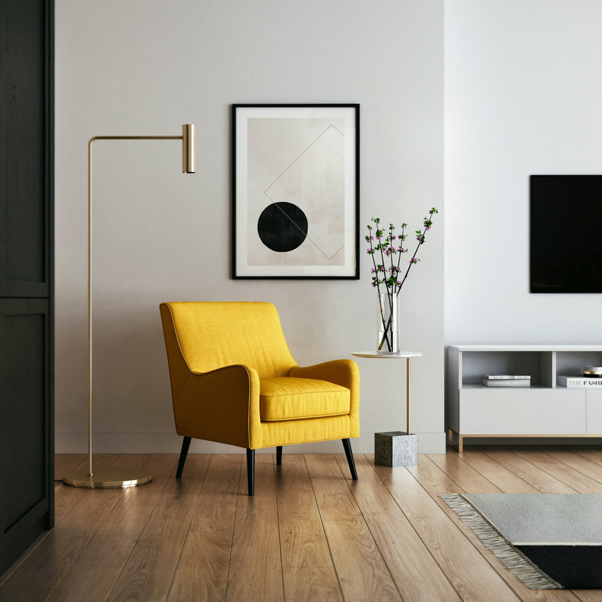
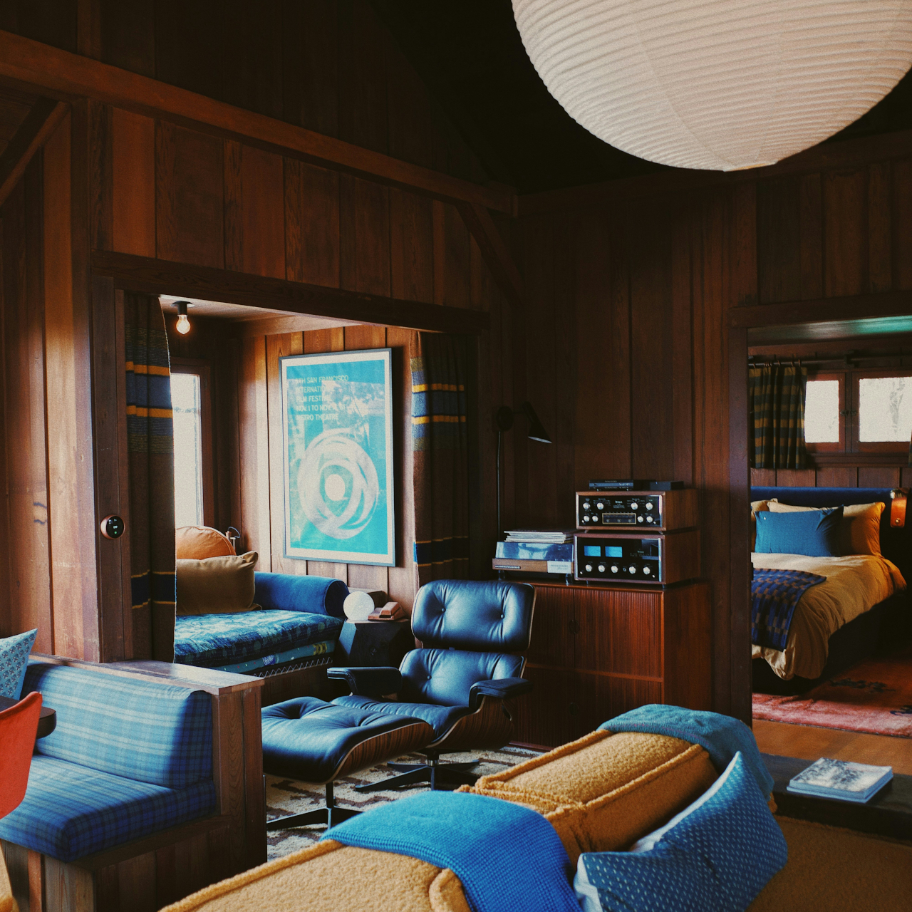
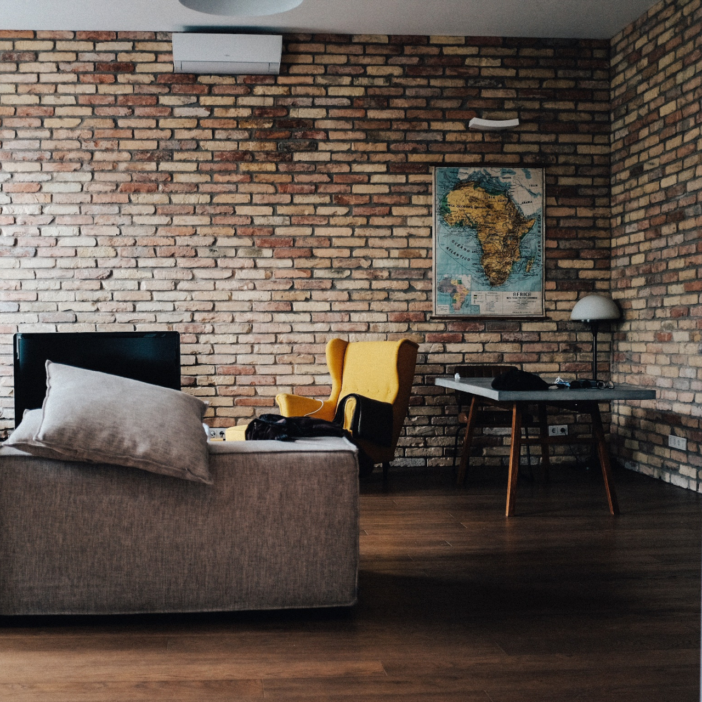
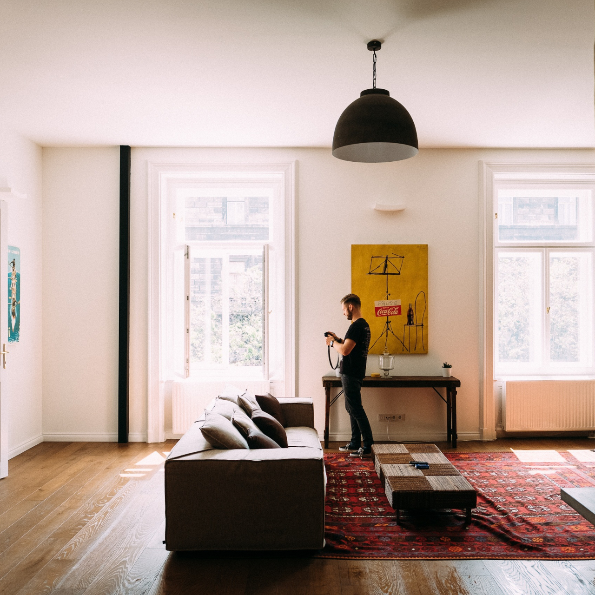

MODERN
洗練された都会派スタイル



モノトーンや抽象画を1～2点、大胆に飾るスタイルです。余白を活かすことで、空間に清潔感と高級感が生まれます。家具のラインに合わせた幾何学的なアートを選ぶのがコツです。
vintage
レトロで武骨なかっこよさ



古い工場の設計図や、1950年代の広告ポスターを飾るスタイルです。黒いアイアンフレームやチーク材などの北欧ヴィンテージ家具と相性が良く、男性的な力強さとレトロな雰囲気を演出できます。